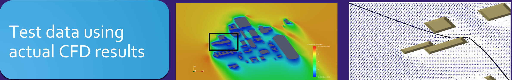

NASA SAFE50
Overview
As part of a research team at the NASA Ames Research Center I worked on the implementation of a Safe Autonomous Flight Environment for small UAV’s within 50 feet of the ground (SAFE50). The project looked into several aspects of UAV safety, these included motor failure control algorithms, wind prediction control algorithms, and CFD studies. In particular I studied the effects that high wind speeds of an urban environment would have on a small flying system and how to find an optimal route to reach your destination given an initial map of wind velocities.
Route Optimization
The route optimization procedure developed, implemented a numerical scheme in order to minimize the travel time of a UAV given a wind velocity vector field obtained from CFD testing. Using Matlab and OpemFoam (CFD software) the images below display the results of the path planning algorithm incorporated with CFD data.
|  |
For a more in depth understanding of the work, or a look at some of the other research I did, feel free to view the full technical report